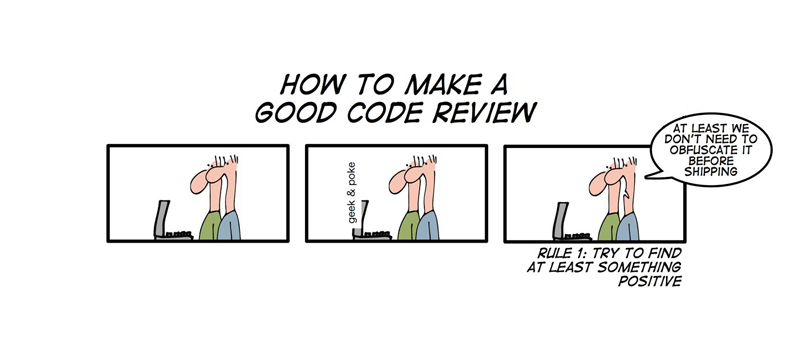

In-Class Reviews

Goal The primary goal of a code walk is to explain the problematic and challenging parts of your code base. Success means “finding problems” so that you can fix and improve your code base. Hiding problems means failure.
The design of your code base fails to live up to the basic principles covered in Fundamentals 1 and 2.
The implementation does not live up to the specification. Understanding the relationship between specification and implementation is a key aspect of PL courses.
Getting Started
Introduce yourself. (10s)
Tell the class which language you chose and anything you consider special. (30s)
Explain which homework assignment the code solves. (10s)
Run the unit tests as appropriate to illustrate any bugs you know about. (0-3min)
Identify the parts of the code base that posed programming problems. (1min)
Procedure
One partner speaks about code to the audience, while the other navigates to the specified pieces. The instructor will request a switch of roles as appropriate.
Guide the audience to these parts, one at a time, from the entry point, so that people understand the context.
Don’t explain obvious pieces of code in any depth.
If anything language-specific may cause a comprehension problem, try to anticipate and explain this aspect up front and on the fly.
Explain code that is visible to the audience. Don’t discuss invisible or imagined code. Don’t scroll without directive by the presenting partner.
Here is an easy way to think about this procedure. For each structure and function/class and method, follow the design recipe to explain its interpretation and purpose. Start with the main function and follow function calls from there.